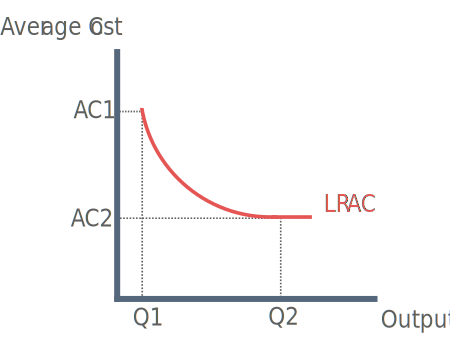
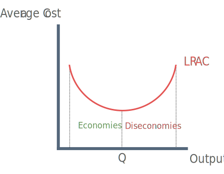

Internal Economies Of Scale
Internal economies of scale are reductions in average total cost caused by the internal actions of a firm.

Types of Internal Economies of Scale
1) Technical economies of scale
Large businesses can afford to invest in specialist capital machinery. Specialist machinery allows for higher productivity and lower average costs.
2) Marketing Economies of Scale
A large firm can spread its advertising and marketing budget over a large output and it can purchase its inputs in bulk at negotiated discounted prices.
3) Managerial Economies of Scale
This is a form of divisions of labour – For example, large law firms can afford to employ specialist senior managers e.g. company law or intellectual property.
4) Financial Economies of Scale
Large firms are usually rated by the financial market as more ‘credit worthy’ and have access to favourable rates of borrowing. This means that they can borrow at discounted rates of intetest.
5) Networking Economies of Scale
Network economies are best explained by saying that the marginal cost of adding one more user to the network is close to zero, but the resulting benefits may be huge because each new user to the network can then interact, and trade with all existing members.
eBay is a good example of exploiting networking economies of scale. When one person joins the website, they interact with existig members and may also encourage friends to join the website.
External Economies Of Scale
External economies of scale occur within an industry and from the expansion of it, rather than from a firm itself.
Examples include the development of research and development facilities in local universities that several businesses in an area can benefit from and spending by a local authority on improving the transport network for a local town or city.
Diseconomies Of Scale
Diseconomies occur beyond point Q where an increase in output leads to an increase in average cost.

Causes:
1) Control
Monitoring the productivity and the quality of output from thousands of employees in big corporations is imperfect and costly.
2) Co-operation
Workers in large firms may feel a sense of alienation and subsequent loss of morale. If they do not consider themselves to be an integral part of the business, their productivity may fall leading to wastage of factor inputs and higher costs.
3) Coordination
Big businesses may lose control over fixed costs such as expensive head offices, management expenses and marketing costs.